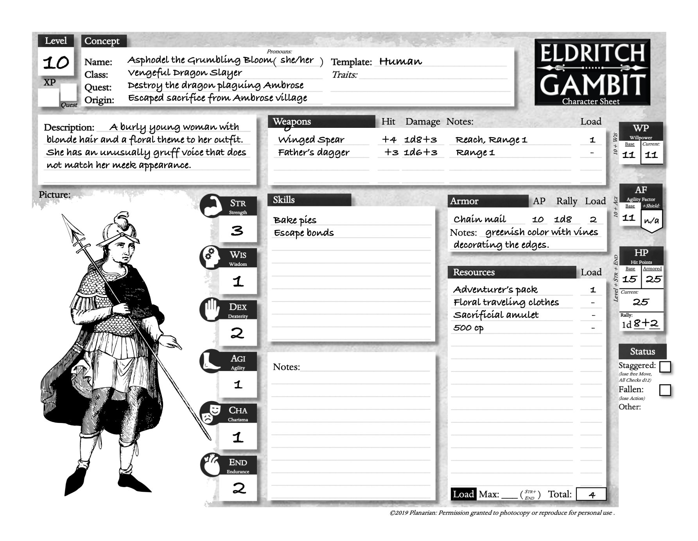

CHARACTERS
Table of Contents
Overview
The following is a brief rundown of the steps to create a character in Eldritch Gambit. You may skip steps or take them in a different order if you please.
- Level : the overall power and experience of the character. Most groups start at Level 10.
- Concept : choose a Name, Class, Quest, Origin, Template, and Description to give them a place in the game world.
- Attributes : set starting Strength, Dexterity, Wisdom, Agility, Charisma, and Endurance to give them power over the game world.
- Defenses : set Willpower, Agility Factor, and Hit Points to give them their defenses.
- Skills : choose up to 3 specific freeform talents to round them out and add interest.
- Gear : buy or choose weapons, armor, and other items to properly equip them.
A player may start even without having chosen all their Concepts, Attributes, Skills, or Gear. These Details may arise spontaneously as “development” in the first few games or so.
Level
The Level describes how powerful the character is, with most groups starting at Level 10. The higher the Level, the more Attribute points they have in total. The most (“max”) you can put into an Attribute is half the Level, rounded up. Attributes are explained soon in this chapter . For now, consider them a way of showing what your character is best at.
A standard tenth Level character starts out heroic and advances slowly. This gives them time to focus outwards, flexing their power and making their mark on the world. Characters add a Level whenever they earn as many XP as their current Level. The player then raises the Level by one and erases the old XP, keeping any left over. Characters get 1-3 XP when the player recounts their favorite highlights from the last session or reaps a Quest reward.
LEVEL BENEFITS
| Level | Attribute Points | Tier |
|---|---|---|
| 1 | 1 (max 1) | - |
| 2 | 2 (max 1) | - |
| 3 | 3 (max 2) | - |
| 4 | 4 (max 2) | - |
| 5 | 5 (max 3) | Common |
| 6 | 6 (max 3) | - |
| 7 | 7 (max 4) | - |
| 8 | 8 (max 4) | - |
| 9 | 9 (max 5) | - |
| 10 | 10 (max 5) | Heroic |
| 11 | 11 (max 6) | - |
| 12 | 12 (max 6) | - |
| 13 | 13 (max 7) | - |
| 14 | 14 (max 7) | - |
| 15 | 15 (max 8) | Elite |
| 16 | 16 (max 8) | - |
| 17 | 17 (max 9) | - |
| 18 | 18 (max 9) | - |
| 19 | 19 (max 10) | - |
| 20 | 20 (max 10) | Legendary |
The Tier column is just to guide Imps on what sort of stories to expect. The Imp may start the party at any Level that fits the adventure.
Concept
Next, think about your character’s Concept, the basic ideas you have about them before getting to their numbered stats. This breaks down into their Name, Class, Quest, Origin, Template, and Description. If you are having a tough time choosing these now, you may choose later - even during the actual game! You will miss out on their benefits until then, however.
Name
What does your character go by? This is often a family name, nickname, or title. There is space for pronouns (he/him, she/her, they/them, etc.). Make sure their name is easy to pronounce and fits the setting. If you have trouble, roll 5d6 below, ask the group for ideas, or just come back to it later.
Examples: Emmet Falco, Tiny Toes, Celestia Alurian, Onion Bob, Sandalphon, Gruz, etc.
NAME SEEDS
| 5d6 | Initial | Examples |
|---|---|---|
| 5 | U | Utrid, Uriah, Ulthar… |
| 6 | Z | Zack, Zeno, Zelda… |
| 7 | O | Oleg, Oliver, Ondine… |
| 8 | V | Vonn, Vincent, Vera… |
| 9 | N | Nisha, Negan, Nemo… |
| 10 | W | Wash, Wei, Will… |
| 11 | G | Geralt, Gina, Gort… |
| 12 | T | Topaz, Terra, Thane… |
| 13 | B | Bina, Bahb, Brutus… |
| 14 | S | Selena, Stavros, Simm… |
| 15 | C | Cullen, Cora, Cran… |
| 16 | R | Reba, Rhett, Ruprekt… |
| 17 | J | Jona, Jerm, Jubal… |
| 18 | M | Marik, Merina, Mordo… |
| 19 | D | Dorf, Deren, Dagnert… |
| 20 | A | Alistair, Arok, Ainu… |
| 21 | L | Lemuel, Lear, Lana… |
| 22 | E | Egon, Eva, Einz… |
| 23 | K | Ketch, Kroma, Kavon… |
| 24 | P | Pike, Palla, Portia… |
| 25 | H | Heff, Hali, Habra… |
| 26 | F | Finn, Fianna, Fenty… |
| 27 | I | Iggy, Irina, Islington… |
| 28 | Y | Yg, Yelen, Yakov… |
| 29 | Q | Q, Quint, Qera… |
| 30 | X | Xul, Xena, Xavier… |
Class
What is your character’s primary career, talent, or calling? This reflects their style of intelligence, so Checks related to Class use a d20 instead of just a d12. Specific Class names are best; vague ones like “Adventurer” might seem clever at first but rarely end up fitting a specific action. Adding a flavorful adjective helps make them unique and can even justify the d20 applying to more actions!
One either has a d20 on related tasks or not. Proficiency beyond that is a matter of having good Attributes, equipment, resources, contacts, hirelings, magic, and supporting Skills .
Examples: Skeptical Priest, Smasher of the Old Ways, Humble wizard, Mercenary Captain, Itinerant Yogurt Salesman, Haughty Courtesan, etc.
Quest
What drives your character to adventure? Quests can include anything from base greed to the search for enlightenment. These should be meaningful and specific, but achievable within a few sessions. Try to break grand Quests into smaller steps, which is good for the narrative as well as feasibility. If you complete a Quest, you get back twice the XP you invested. See the Advancement section for more details . Look forward to changing Quests often as the character grows or faces new situations.
Examples: Revenge on the orc commander for taking my place, Win the local bar’s ostrich wing-eating competition, Prove loyalty to the gnomes.
Origin
Everyone comes from somewhere, where does your character hail from? Origins should be strongly linked to the setting and may include formative events that bring them to this moment. These work like Classes but grant d20 for local knowledge and speaking their native language.
One-shot games and dungeon-crawls without any reference to the outside world might never call for this. For more elaborate campaigns, it can be vital. If your group is using a collaborative setting , you may be able to make up your own homelands and do world-building as a Player!
Examples: Eldest daughter of the Argos village chieftain, Raised by dire wolves, Baker’s boy from Crosston, River City Delinquent, etc.
Template
What sort of creature is your character? Put their species, model, clade, “race,” etc., here. Eldritch Gambit assumes, perhaps unjustly, that your setting at least has humans. As such, most need only put “Human” here, implying no further changes. Other Templates may have Traits describing how they differ from humans, for better or worse.
Weird things can happen during an adventure. Even a baseline human can gain Traits from magic or affliction. The Templates section has more information, including how to play non-human, animal, or even monstrous forms as characters.
Description
What do others see when they meet your character? This is a short sentence or two including evocative features like physical build, age, sex, and a distinctive quirk. It helps some players to just pick a few notable things and write them in the Description area of the character sheet. A random (d20) table for a distinctive feature is below for inspiration.
Examples: A sad young woman with impossibly blue skin. A frog transformed into a human who still ribbits when nervous, a burly old man with a scar over one eye.
DESCRIPTION SEEDS
| D20 | Distinctive Quirk |
|---|---|
| 1 | Ailment (chronic sneeze, cough…) |
| 2 | Atavism (catlike, mousy, caveman…) |
| 3 | Bearing (twitchy, regal, shifty…) |
| 4 | Dress (Snappy, slovenly, antiquated…) |
| 5 | Ears (pointed, cauliflower, huge…) |
| 6 | Eyes (close-set, piercing, wide, blue…) |
| 7 | Face (pinched, cherubic, floppy…) |
| 8 | Fear (abandonment, ham, bridges…) |
| 9 | Gait (stiff, serpentine, trembling…) |
| 10 | Growth (horn, hump, benign tumor…) |
| 11 | Habit (catchphrase, nervous tic…) |
| 12 | Hair (pompadour, bald, blue…) |
| 13 | Hands extra finger, webbed, huge…) |
| 14 | Item (trinket, lucky hat, handcuffs…) |
| 15 | Mouth (wide, full, toothy grin…) |
| 16 | Nose (broad, flat, long, red…) |
| 17 | Physique (short, tall, skinny, stout…) |
| 18 | Skin (birthmarks, scars, acne…) |
| 19 | Tattoo (artistic, tribal, prison…) |
| 20 | Voice (gruff, flat, high-pitched…) |
Attributes
Each character has six Attributes to define their strengths and weaknesses: Strength (Str), Wisdom (Wis), Dexterity (Dex), Agility (Agi), Charisma (Cha), and Endurance (End). An average person would have about one in each. Anything above one is exceptional and more befitting of an adventurer. You may have a negative Attribute if you wish but get no points back for it.
A character gets Attribute points or “pluses” to distribute equal to their Level. Fantasy settings allow for incredibly high Attributes, with a max of half the character’s Level, rounded up.
ATTRIBUTE DESCRIPTIONS
| Attribute | Description |
|---|---|
| -2 | Abysmal |
| -1 | Poor |
| 0 | Low |
| +1 | Normal |
| +2 | High |
| +3 | Very high |
| +4 | Great |
| +5 | Optimal |
It is not unusual for high-level characters to have “superhuman” Attributes of +6 or more. The Basics and Scenes chapters give examples of how these Attributes can be used.
You may also roll Attributes randomly. To do this, roll d6 equal to Level, then put each 1 into Str, each 2 into Wis, each 3 into Dex, each 4 into Agi, each 5 into Cha, and each 6 into End. Your final Attribute score equals the number of dice in that Attribute. If more than half the dice end up in one Attribute, flip the excess dice over to their opposite side and put them in that Attribute instead.
RANDOM ROLL METHOD
THE ATTRIBUTES
Strength (Str)
Brawn and muscle. Adds weapon damage, boosts Hit Points (HP, and helps to carry heavier loads. Used for Rolls more than Checks. The pride of every mighty warrior.
Wisdom (Wis)
Cunning and Fortitude. Aids Checks to create, remember, or discover and forms the Willpower (WP, defense. In a world of magic, the mind is the most powerful weapon.
Dexterity (Dex)
Finesse and manual coordination. Aids accuracy of attacks, whether melee, ranged or spell. Also linked to handsy feats of grasping, stealing, or catching.
Agility (Agi)
Reflexes and athletic ability. This forms the Agility Factor (AF, and adds to Checks for athletic actions. Get into or out of trouble faster.
Charisma (Cha)
Presence, and persuasion. Adds to Checks for trying to get one’s way in tense situations and empower Spells. Those who want to become legends will invest here.
Endurance (End)
Constitution and stamina. Resists Afflictions, burdens, and injury, boosts Hit Points (HP, and Rallies . Everyone can use this when the going gets tough.
Defenses
Derived from Attributes, these keep track of how far one is from suffering setbacks like injury, stress, or death. You can find Defenses on the far-right edge of the character sheet, making them easy to mark and erase during play.
DEFENSES
| Defense | Abbr. | Base |
|---|---|---|
| Agility Factor | “AF” | 10 + Agi |
| Hit Points | “HP” | Level + Str + End |
| Willpower | “WP” | 10 + Wis |
Willpower (WP)
This crucial gauge of mental reserve tracks how well the character is coping. WP is equal to ten plus Wis. This serves two purposes, both at odds with the other! First, it is the character’s DF when foiling stealth or the mental influence of others. Second, they can spend each point to Reroll a die. Ultimately, one must decide when to boost their character’s effect on the world at the cost of their resolve.
The use of magic items called Materia also takes its toll on the mind. Readying a Materia costs a WP, which cannot be regained until the item is discarded or finds its way into someone else’s hands.
WP can only drop to half before self-preservation and fatigue kicks in. Luckily, Fellowship with other characters can restore it. Starting a new campaign refills it entirely.
Normally, one can only spend WP on their own Rolls. The exception is that Fallen or Dead characters may spend WP on Rolls made by allies. Attribute this to ghostly intervention, vengeful comrades, or pure coincidence. It does however give the unfortunate a way to contribute.
Agility Factor (AF)
This is how hard it is for an opponent to hit the character, whether due to lightning reflexes, keen situational awareness, or the lack of either. A foe must beat this on their Attack Check to successfully hit them. Shields add a bonus directly to AF, so the +Shield box is for those wielding one.
Hit Points (HP)
A rough measure of how far the character is from doom. These are a murky combo of stamina, morale, and luck. Being low on HP simply means the next blow they take may be their last. Base HP is equal to Level + Str + End, and this may go down from damage and back up from Rallies .
Armor adds its Armor Points (AP) to HP, totaled in the Armored box. The Current box tracks damage to HP. The Rally box is how many HP can be recovered with a Rally Action . The Rally die also improves with armor.
For example, a Level 10 character with 2 Str and 4 End gets 16 Base HP. They can Rally for 1d4+4 HP. If they wear leather armor granting 5 AP, their Armored HP jumps to 21 and their Rally to 1d6+4.
Damage lowers current HP by that amount. A combatant can stand and fight as long as they have HP left. At zero or below, they are Fallen. Likewise, any hit that drops someone to zero or lower is a Felling blow. Fallen may or may not mean dead, depending on their later Recovery Check .
If the incoming hit is not a Felling blow, Players may choose to Stagger. This negates that damage entirely but inflicts the Staggered Status. It’s best to do this only in the face of massive damage or when dangerously close to zero HP. Once Staggered, they cannot Stagger again until that Status clears.
HP Status Effects
- Staggered combatants have taken a nasty wound. They lose their Free Move until Recovery and all Checks are made on a d12 instead of d20.
- Fallen combatants have dropped to the ground. They get no Action, and their AF drops to zero.
- Dead means time to make a new character. This happens on a failed Recovery Check or any doom the Player and Imp feel were not survivable. Powerful Artifacts may be able to reverse Death, depending on the setting.
Status
There are other baleful effects one may fall under beyond the usual Staggered, Fallen, or Dead above. Usually temporary, there is ample room for these on the blank “Status” section on the right hand side of the character sheet.
- Blinded: Cannot see or do things entirely reliant on sight, such as reading. Checks partly reliant on sight face a -4 penalty, and foes count as if behind Soft Cover (-4). Lasts until treated or recovered.
- Burning: a burning character takes 1d6 fire damage at the top of each round. They also cannot Rally , as being on fire is a real mood-killer. A Use Action narrated as rolling, dousing, etc. may extinguish the flames and end this status.
- Confused: stunned, baffled, or hallucinating. Checks turning up an odd (raw) number on the dice fail due to whatever nonsense they are thinking.
- Deafened: cannot hear or perform tasks reliant on hearing, like commands or music. Sign language or lip-reading OCS may alleviate this.
- Diseased: failed a Recovery Check after exposure to an infection . Can get better or worse with later Recovery Checks.
- Encumbered: burdened with a Load over Str + End. The Encumbered take two Moves to cross a Zone. If Load exceeds twice Str + End, they are Incapacitated. Dropping Load ends this effect.
- Grappled: partly restrained but struggling. Grappled characters lose their Action until their attacker loses hold of them.
- Incapacitated: paralyzed, drugged, or overburdened. They lose their Action and AF drops to zero. Ends when the Spell, Affliction, or Encumbrance does.
- Poisoned: suffering from a poison Buildup Roll. Record the Buildup with the Status. If the total exceeds their Base HP, the poison takes effect.
- Surprised: unaware combatants lose their Action for the first Initiative Round and halve their AF. This ends next Round when they recover their wits.
Skills
These supplement Class and Origin, broadening the character and adding flavor. Skills are very flexible and can stand for languages, privileges, unusual talents, even vices or flaws! Skills are more specific but not as serious as Classes or Origins, so have fun with them!
All characters can choose up to three Skills at the start, though they can gain more later via Training Montages . You may leave some blank and choose them later. If a character reveals a suspiciously convenient Skill during play, they should make up a likely story about why they have it.
Like Classes and Origin, broadly worded Skills may backfire if they are not a good fit for the task. To prevent this, try to phrase Skills as “Verb-noun” combos such as “Assess treasure”, “Skin carcasses,” or “Speak Dwarvish.” If you are playing in a well-defined setting, there may be thematic Skills ready for you to choose from. This helps ensure the character fits in and gets to use their talents.
Players may ask others to think up a Skill for them. This can lend an unexpected aspect to the character’s abilities and invest the Players in each other’s characters.
Example Skills: Bake bread, Speak Elvish, Advocate for the Conquering Worm, Sigh Wistfully at Compliments, Track Delinquents, Tend to Father’s Estate, Scurry up Trees, Enjoy Bad Poetry, etc.
Gear
What one chooses to carry with them can be as revealing of character as any other aspect. It’s a bit much to deal with right out of the gate, so starting characters have the option of choosing from the list below to make things quick.
Make sure you have any gear you need to do things related to your Class, Origin, and Skills. The Player may spend coins on other gear, and the Imp may grant more or less if it fits the character and setting. The Resources chapter has more info.
Magic-users and the well-prepared may want to buy Ephemera like potions and scrolls. These expendable items are about 100 cp each and allow limited spell casting. Some Imps allow characters to start with Materia, and even an Artifact is not out of the question if it makes for a good game.
Starting Gear
- One normal weapon of your choice .
- One normal armor of your choice .
- A tool or item needed for your Class.
- Memento or trinket reflecting your Origin.
- Traveling clothes in your style.
- Backpack (bedroll, small cup, 10m rope, flint & steel, chalk, snacks counting as one ration, a torch, large sack, water skin or canteen).
- Dagger or Knife (same stats).
- 500 (or 2d4x100) copper pieces (“cp”).
Encumbrance
An adventurer can only carry so much, especially returning from a lucrative outing. Each significant burden counts as one or more units of Load. This is based on how many hands it would take for an average person to carry the item. One can bear up to Str + End in Load before becoming Encumbered. This means it now takes two Moves to cross a single Zone. If carrying more than twice Str + End, they are Incapacitated instead.
This scales with Size, so what would be held in one hand for a human-sized character may not even count for a giant, and vice-versa.
- Load 0 items can usually fit into a pocket or small purse. A single hand could hold several or many. For example, a dagger or herb packet.
- Load 1 items are anything an average person can easily carry in one hand; a sword, shield, waterskin, bag of about 1000 coins, etc.
- Load 2 items require both hands for an average person. A spear, two-handed weapon, or longbow would apply.
- Load 3 or higher items are best carried on one’s back.
Successful adventures, especially longer ones, will call for good resource management.
Swim (Move) Checks are at -1 for each Load.
COMMON LOADS
| Item | Load |
|---|---|
| Backpack, small & filled with gear. | 1 |
| Backpack, large & filled with gear. | 2 |
| Bag of coins, 1000 cp or so. | 1 |
| Body, Medium (man-sized) | 4 |
| Body, Small (dog, small child, etc.) | 2 |
| Body, Large (Horse, ogre, etc.) | 8 |
Adventurers may ditch bulky items such as backpacks or sacks of gold before a fight to avoid encumbrance. This does not take an Action but picking it back up does. Likewise, a fleeing party may distract pursuers by dropping food or precious items.
It may help to write down items in a container on an index card as if the card was the container. If a character trades or drops the container, the player can pass the card to easily transfer the lot.
Example Character
The character sheet for Asphodel is below. She is a level 10 starting character with standard gear, except for where the player added minor items to indulge ideas about her background.
Asphodel’s player thought her up after watching a movie where a young village girl was left as a sacrifice to a dragon. What if she escaped on her own instead? Instead of writing a backstory, her player has woven this tale using the character sheet itself.
When she escaped, the angry dragon destroyed her village as retribution, so she devoted her life to fighting dragons. This informs most of her Concepts, except for her nickname “the Grumbling Bloom.” This was inspired by rolling “Voice” as a Description Quirk. As a human, she does not add any Traits.
Asphodel is a survivor; strong (+3 Str), tough (+2 End), a capable fighter (+2 Dex), and decent everywhere else (+1 Wis & AGI & CHA).
With an invented Class of “Vengeful Dragon Slayer,” she knows all about dragons and hunting them down. This is a bit over-specialized, so Skills fill in the gaps. Her “escape bonds” Skill may have saved her and could even be used for breaking social bonds and traditions if her player is clever. Her “bake pies” Skill hearkens back to her job before she was offered up as an unwilling sacrifice. She leaves the remaining Skill slot blank for later.
She takes a spear, chain mail armor, and the standard starting gear. Her player writes down the sacrificial amulet as a flavor item and notes her dagger is a keepsake from her father. Did he give it to her, enabling her escape, or did she find it on his charred carcass later?
ASPHODEL 
Advancement
Characters in Eldritch Gambit improve gradually with play. Players earn XP for their characters by sharing Highlights of the last game or achieving a personal Quest. The point of earning XP is to buy a higher Level: Levels raise when the character has as many XP as their current Level. The player then erases the spent XP, keeping any leftovers.
A new Level means a new point in any Attribute, but you may only raise an Attribute to half your Level. Apply these Attribute raises at any time - it can be dramatic to save the day by powering up in the throes of a tense combat scene!
No one is doomed by their advancement choices. The group can always work together later to revise unsatisfactory Concepts, Skills, or Attributes.
Highlights XP
At the start of every game after the first, the Imp asks each player in turn for a favorite Highlight of the last session. Any half-decent answer gets an XP. This question goes around the table three times, for up to three XP per player. A short session may call for two, and a long one may call for four chances.
For their Highlight, each player recounts their character’s favorite deed last session, heroic or not. A player who gets stuck may ask others for help.
To spice things up, the Imp may demand the final round of Highlights be for something another character did. This encourages the players to pay more attention to each other.
Highlights are not just a tool for the player. Imps should pay attention as they reveal what the Players enjoyed most. Likewise, if they bring up too few, they may not be getting enough chances to shine or would like to do something differently.
Quest XP
Rising to the challenge of a personal quest is a hallmark of fantasy adventure. They are also a double-or-nothing gamble to get more XP! After Highlights XP, Players can bid or Invest one XP in their character’s Quest. If they accomplish it, they get double the invested XP back! If they abandon the Quest for another, they get nothing. Quests are also vital for making some magic items.
A long Quest may accumulate XP over several sessions, resulting in either an enormous payout or a tragic loss. A more manageable strategy is to keep the big goal in mind but set up smaller, more do-able Quests as steps toward it. Players should invent Quests that mesh well with their current situation and make the game more fun and exciting for others.
XP